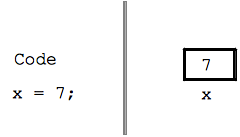

This is a short section, to add the idea of variables to the code.

|
|
Variables work as a shorthand -- we = assign a value into a variable, and then use that variable on later lines to retrieve that value. In the simplest case, this just works to avoid repeating a value: we store the value once, and then can use it many times. All computer languages have some form of variable like this -- storing and retrieving values.
Change the code below so it produces the following output. Use a variable to store the string "Alice" in a variable on the first line like x = "Alice";, then use the variable x on the later lines. In this way, changing just the first line to use the value "Bob" or "Zoe" or whatever changes the output of the whole program.
Alice Alice Alice Alice In high school I had a crush on Alice Now the Alice curse is lifted
|
|